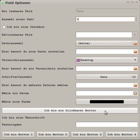
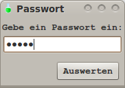
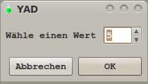
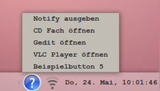
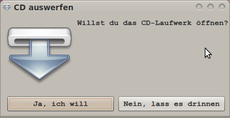

yad
Dieser Artikel wurde für die folgenden Ubuntu-Versionen getestet:
Ubuntu 16.04 Xenial Xerus
Ubuntu 14.04 Trusty Tahr
Zum Verständnis dieses Artikels sind folgende Seiten hilfreich:
YAD  (Yet Another Dialog) ermöglicht das Erzeugen grafischer Dialoge aus Shell-Skripten oder auf der Kommandozeile. Es handelt sich um eine Abspaltung (Fork) von Zenity, die einige Verbesserungen enthält. So kennt YAD nicht nur mehr, sondern auch komplexere Dialoge. Die Syntax von YAD ähnelt der von Zenity sehr.
(Yet Another Dialog) ermöglicht das Erzeugen grafischer Dialoge aus Shell-Skripten oder auf der Kommandozeile. Es handelt sich um eine Abspaltung (Fork) von Zenity, die einige Verbesserungen enthält. So kennt YAD nicht nur mehr, sondern auch komplexere Dialoge. Die Syntax von YAD ähnelt der von Zenity sehr.
Dieser Artikel ist keine vollständige Dokumentation der Möglichkeiten von YAD. Er gibt einen Einstieg in den Umgang mit dem Programm. Für weitere Details sei auf die Manpage und die Hilfeoptionen des Programms verwiesen.
Installation¶
Das Programm ist ab Ubuntu 15.10 in den offiziellen Paketquellen enthalten [1]:
yad (universe)
 mit apturl
mit apturl
Paketliste zum Kopieren:
sudo apt-get install yad
sudo aptitude install yad
PPA¶
Die aktuelle Version wird - auch für ältere Ubuntu-Versionen - über ein "Personal Packages Archiv" (PPA) [2] angeboten.
Adresszeile zum Hinzufügen des PPAs:
ppa:webupd8team/y-ppa-manager
Hinweis!
Zusätzliche Fremdquellen können das System gefährden.
Ein PPA unterstützt nicht zwangsläufig alle Ubuntu-Versionen. Weitere Informationen sind der  PPA-Beschreibung des Eigentümers/Teams webupd8team zu entnehmen.
PPA-Beschreibung des Eigentümers/Teams webupd8team zu entnehmen.
Damit Pakete aus dem PPA genutzt werden können, müssen die Paketquellen neu eingelesen werden.
Nach dem Aktualisieren der Paketquellen erfolgt die Installation wie oben angegeben.
Bedienung¶
YAD wird von der Kommandozeile oder aus Skripten heraus aufgerufen. Die Rückgabe erfolgt auf der Standardausgabe oder wird in Skripten in Variablen oder Arrays gesichert. Ein einfaches Beispiel:
yad --text 'Hallo Welt!'
Das nächste Beispiel ist ein Einzeiler, der der besseren Lesbarkeit halber auf mehrere Zeilen verteilt wurde, weshalb die Zeilenumbrüche mit dem Backslash \ maskiert werden:
yad --title 'Beispiel Fenster' \ --window-icon=gtk-about \ --geometry=400x100 \ --button=gtk-close \ --text 'Hallo Welt!'
Separatoren¶
Die Ausgabe und bei einigen Aktionen auch die Eingabe nutzt Separatoren zum Trennen einzelner Einträge. Voreingestellt sind das Zeichen | zum Trennen der Einträge und das Zeichen ! zum Trennen der einzelnen Wertzuweisungen in einem Eintrag. Fragt man also zwei Werte, eine Zahl und ein Wort mittels YAD ab, so wird die Ausgabe beispielsweise
1|eins
lauten. Übergibt man YAD, beispielsweise bei einem Formular, Argumente, so sieht die Eingabe etwa so aus:
Wert1!Wert2
Etwas komplexer wird dies bei der Anzeige im Benachrichtigungsfeld, wenn mehrere Einträge im Kontextmenü gewünscht sind (Symbole (Icons) für Menüeinträge im Benachrichtigungsfeld sind erst ab svn-Revision 471 verfügbar):
menu:EINTRAG1!AKTION1!ICON1|EINTRAG2!AKTION2!ICON2
Hier wird der Unterschied zwischen den Haupt-Separatoren | (--separator) und den Separatoren für einzelne Einträge ! (--item-separator) deutlich. Die Separatoren können über die entsprechenden Optionen festgelegt werden.
Formulare¶
Ein Formular (--form) besteht aus Feldern (--field). Felder beinhalten Einträge, die durch Separatoren getrennt sind und in denen mehrere Werte übergeben werden können, welche durch weitere Separatoren getrennt sind.
Feldtypen¶
Folgende Tabelle zeigt die verschiedenen Typen der Felder.
| Feldtypen in Formularen | |
| Typ | Beschreibung |
RO | read only - nur lesbares Feld |
NUM | numeric - Dezimalzahl |
CHK | Checkbox |
CBE | combobox - editierbare Combobox |
FL | Schaltfläche für Dateiauswahl |
SFL | Feld zum Erstellen einer Datei |
DIR | Schaltfläche für Verzeichniswahl |
CDIR | Feld zum Erstellen eines Verzeichnisses |
FN | Schaltfläche für Schriftauswahl |
MFL | Multiple Dateiauswahl |
DT | Datumsfeld |
CLR | Farbauswahl |
BTN | Schaltfläche |
LBL | Überschrift |
Wie die Felder in der Praxis aussehen und wie die Optionen verwendet werden, kann man an folgendem kleinen Beispiel sehen.

Zugehöriger Befehl:
1 2 3 4 5 6 7 8 9 10 11 12 13 14 15 16 17 18 19 20 21 22 23 24 | yad \ --title="Field Optionen" \ --form \ --item-separator=, \ --separator=" " \ --field="Nur lesbares Feld:RO" Text \ --field="Auswahl einer Zahl:NUM" \ --field="Ich bin eine Checkbox:CHK" \ --field="Editierbares Feld:CBE" Text \ --field="Dateiauswahl:FL" \ --field="Hier kannst du eine Datei erstellen:SFL" \ --field="Verzeichnisauswahl:DIR" \ --field="Hier kannst du ein Verzeichnis erstellen:CDIR" \ --field="Schriftartauswahl:FN" \ --field="Hier kannst du mehrere Dateien wählen:MFL" \ --field="Wähle ein Datum:DT" \ --field="Wähle eine Farbe:CLR" \ --field="Ich bin ein klickbarer Button:BTN" \ --field="Ich bin eine Überschrift:LBL" \ --field="Texteingabe:TEXT" \ --button="Ich bin Button 1" \ --button="Ich bin Button 2" \ --button="Ich bin Button 3" \ --button="Ich bin Button 4" |
Auch dies ein Einzeiler, der der besseren Lesbarkeit halber auf mehrere Zeilen verteilt wurde. Zeilenumbrüche wurden mit einem Backslash \ maskiert.
Anwendungsbeispiele¶
Passwortabfrage¶

1 2 3 4 | #! /bin/bash eingabe="$(yad --entry --hide-text --button="Auswerten" --title="Passwort" --text="Gebe ein Passwort ein:")" yad --info --text="Die Eingabe war $eingabe" |
Es wird nach einer Eingabe (--entry) gefragt. Die Eingabe soll durch Sternchen verschleiert werden (--hide-text). Mit --text erfolgt eine Mitteilung an den Benutzer. Was im Fenstertitel steht, definiert man mit der Option --title. Abschließend gibt es noch eine Schaltfläche, die den Dialog beendet (--button).
Die Eingabe des Benutzers wird im vorliegenden Beispiel in einer Variable $eingabe gespeichert. Mit dem zweiten YAD-Befehl wird der Inhalt dieser Variable über einem Textdialog ausgeben.
Zahlenabfrage¶

1 2 3 4 5 6 7 8 | #! /bin/bash array=($(yad \ --item-separator="," \ --separator="\\n" \ --form \ --field="Wähle einen Wert":NUM 5,1..10,1)) yad --info --text="Der Wert ist ${array[0]}" |
In diesem Formular (--form) wird ein Wert in einem Zahlenfeld (--field) gefragt. Dieser Wert wird in einem Array gespeichert. Mit dem zweiten YAD-Befehl wird die Eingabe des Benutzers in einem Textdialog ausgegeben.
Menüdialog¶

1 2 3 4 5 6 7 8 9 10 11 12 13 14 15 16 17 18 19 | #!/bin/bash #Pipe erstellen PIPE="$HOME/.pipe.tmp" rm $PIPE mkfifo $PIPE exec 3<> $PIPE #Yad Dialog erstellen yad --notification --listen <&3 & #Menüeinträge definieren echo "menu:\ Notify ausgeben!notify-send "...Test"|\ CD Fach öffnen!eject|\ Gedit öffnen!gedit|\ VLC Player öffnen!vlc|\ Beispielbutton 5!echo "Button 5 wurde gedrückt" " >&3 #Icon des Menübuttons definieren echo "icon:/pfad/zum/icon.png" >&3 #Name des Menüs definieren echo "tooltip:Beispielmenü" >&3 |
Dieses kleine Beispielskript erstellt ein voll funktionsfähiges Panelsymbol (Trayicon) mit beispielhaften Funktionen wie z.B dem Öffnen des CD-Laufwerks oder dem Ausgeben einer Benachrichtigung. Ein Klick mit der rechten Maustaste  auf das Panelsymbol klappt das Menü auf. Es bietet sich an, anstelle eines Befehls für einen Menüpunkt auf ein weiteres Shellskript zu verweisen, da ansonsten schnell die Übersichtlichkeit leidet.
auf das Panelsymbol klappt das Menü auf. Es bietet sich an, anstelle eines Befehls für einen Menüpunkt auf ein weiteres Shellskript zu verweisen, da ansonsten schnell die Übersichtlichkeit leidet.
1 2 3 4 5 6 | #Menüeinträge definieren echo "menu:\ Mein Skript 1!/pfad/zu/meinem/skript1.sh|\ .. .. .." |
Hinweis:
Der Menüdialog (Notification-Icon) lässt sich ohne Weiteres nicht benutzen, wenn die Arbeitsumgebung Unity verwendet wird, siehe Unity/Unity Desktop.
Der Befehl, mit welchem dies bewirkt wird, lautet
gsettings set com.canonical.Unity.Panel systray-whitelist "['all']"
Entscheidungsabfrage¶

1 2 3 4 5 6 7 8 9 10 11 12 | #!/bin/bash #YAD Dialog erstellen yad --title="CD auswerfen" --text="Willst du das CD-Laufwerk öffnen?" --button="Ja, ich will" --button="Nein, lass es drinnen" --image=/pfad/zum/bild/im/fenster.png #Returnwert speichern ret=$? #Auswerten des Returnwertes if [ $ret = 0 ] #Wenn der Benutzer auf JA drückt, then #dann führe folgenden Befehl aus eject #Befehl else #Ansonsten führe diesen Befehl aus exit 1 #Befehl (hier exit 1 für beenden) fi |
In einem solchen Dialog kann es beliebig viele Schaltflächen geben. Alle können mit unterschiedlichen Aktionen belegt werden. Die Schaltflächen haben drüber hinaus einen eigenen Rückgabewert, aufsteigend durchnummeriert. So liefert, wenn man es YAD nicht anders mitteilt, die erste Schaltfläche den Rückgabewert 0, die zweite Schaltfläche hat den Rückgabewert 1 usw.
Diese Werte können beispielsweise mit einer if-Abfrage ausgewertet werden, wie hier im Beispiel gezeigt. Denkbar sich natürlich alle gängigen Methoden, die eine Shell mitbringt.
Problembehebung¶
Gibt man in einer Form (--form) einem Feld (--field) keinen Standard-Wert mit, so kommt es beim Einsatz von YAD-Version 0.33.1-1 dazu, dass bei einem im Script folgenden read der Fehler "read: Lesefehler: 0: Die Ressource ist zur Zeit nicht verfügbar" kommt. Daher ist es sinnvoll, immer einen Standard-Wert (bei Textfeldern ggf. "") anzugeben.
Störende Warnmeldung¶
Bei jedem Aufruf von Yad erscheint im Terminal eine Warnung
Gtk-Message: GtkDialog mapped without a transient parent. This is discouraged.
Der Eintrag an sich ist harmlos, stört ggf. aber die Übersicht erheblich. Man wird ihn los, indem man im Skript jeden Yad-Aufruf mit einem ans jeweilige Zeilenende gesetztem
2> /dev/null
die Meldung ins Nirvana schickt.
- Erstellt mit Inyoka
-
 2004 – 2017 ubuntuusers.de • Einige Rechte vorbehalten
2004 – 2017 ubuntuusers.de • Einige Rechte vorbehalten
Lizenz • Kontakt • Datenschutz • Impressum • Serverstatus -
Serverhousing gespendet von